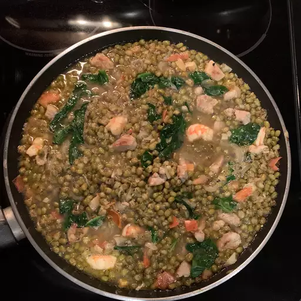

Mongo Guisado (Mung Bean Soup)

This is a hearty soup that's excellent to eat by itself or with rice. Mongo beans are also called mung or green beans. Malungay leaves are very nutritious, and the tree is sometimes called a horseradish tree; use them in place of the spinach if you can find them.
Ingredients
- ½ pound raw mung beans
- 2 cups water
- 2 tablespoons olive oil
- 1 onion, chopped
- 2 cloves garlic, minced
- ¼ pound boneless pork loin, cut into 1-inch cubes
- salt and ground black pepper to taste
- ¼ pound peeled and deveined prawns
- 1 small tomato, diced
- 3 cups chicken broth, or more as needed
- ½ pound fresh spinach leaves
Steps
- Bring the mung beans and the water to a boil in a pot; cook at a boil until the beans are soft, about 40 minutes. Mash the beans; set aside.
- Heat the olive oil in a large pot; cook and stir the onion and garlic in the hot oil over medium heat until softened, 5 to 7 minutes. Add the pork; season with salt and pepper. Continue cooking the mixture another 3 minutes. Gently stir the prawns into the mixture; cook 2 minutes more. Add the tomatoes; cook another 3 minutes. Reduce heat, and pour the chicken broth over the mixture; allow the mixture to simmer in the broth for 5 minutes.
- Add the mashed beans to the soup; mix well. Cook another 5 minutes, stirring frequently to prevent any of the mixture from sticking to the bottom of the pot. Add more chicken broth or water if the soup is too thick. Stir the spinach leaves into the soup and cook 2 minutes more before serving hot.